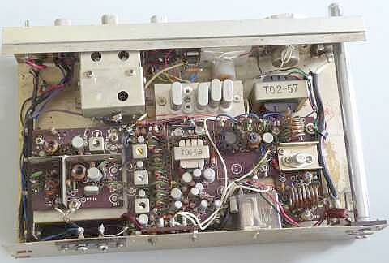
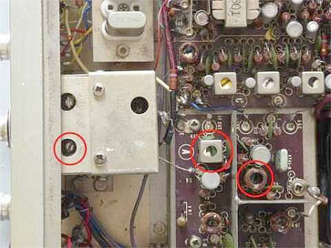

 |
ケースから取り出した中身です
左から、受信コンバータ部
受信ＩＦ部
ＡＦ（変調）部
送信部
フロントパネルにくっついて見えるのは受信第二ＯＳＣです
その横に、送信用クリスタルが見えます
１枚基板ではありませんが、平面（１面）のシンプルな構造です
その下側には単一電池を８本収納します |
 |
今回、調整をしてみて、なかなかやっかいというか手強い点があったのでご紹介します
ポイントは、赤丸３箇所
受信第二ＯＳＣのＶＣのひとつが第１ＩＦのトラッキングを取るようになっています
真ん中にある赤丸のトランスがその第１ＩＦの出力トランスです
右の赤丸が４３ＭＨｚ第１局発用の発振コイル（負荷コイル）
この３つの調整如何で、スプリアス受信/感度が大きく異なります
CAL信号での調整では、きっと上手くできません
きちんと外部から信号を与えてやる必要があります |
まだＮＰＮ型のトランジスタの出始めの頃・・・送信ファイナルとドライバを除く全てが、ＰＮＰ型のトランジスタで構成されています
電源も＋接地です
鉄製のシャーシにケースと言うことで、重量はあるし錆びに弱いと、日本製の十八番と言って良い作られ方です（コスト最優先、ですきっと）
改造：
メーターの変更に合わせ、送受表示の切り替えを不要としてありました
またメータのバックライトのＯＮ／ＯＦＦと言うことで、イヤホンジャックの穴を利用してトグルＳＷが取付られていました |
さて、最後はお決まりのスペック紹介
外部ＤＣ１２Ｖ供給
送信は、５０．２～５２．０ＭＨｚ（内蔵クリスタルの関係）で、１．２Ｗ
受信は、ＡＭ１ＫＨｚ３０％変調のＯＮ／ＯＦＦで、Ｓ／Ｎ１０ｄｂが得られるアンテナ入力 １μＶ
仕様上は、２μＶとなっていますが、５１．０ＭＨｚで追い込むと、上記のような結果になりました
５０．１～５２．０ＭＨｚをある程度均等に調整して、Ｓ／Ｎ１０ｄｂが得られるアンテナ入力１．６μＶ以下、というところで手を打ちました
やはり夕方になるとＩＦのすっぽ抜けが気になりますし、ＶＦＯ（第二局発）の安定度も今一歩です（ＶＦＯは動くもの、動くからＶＦＯと言う理屈なら、それなりに許せる範囲です！？）
混信問題など言わず、感度だけで言うなら、十分今に通用しそうです
あと、元々か経年変化が定かではありませんが、送信クリスタルの周波数に結構誤差がありました（３ＫＨｚ～９ＫＨｚ）
|